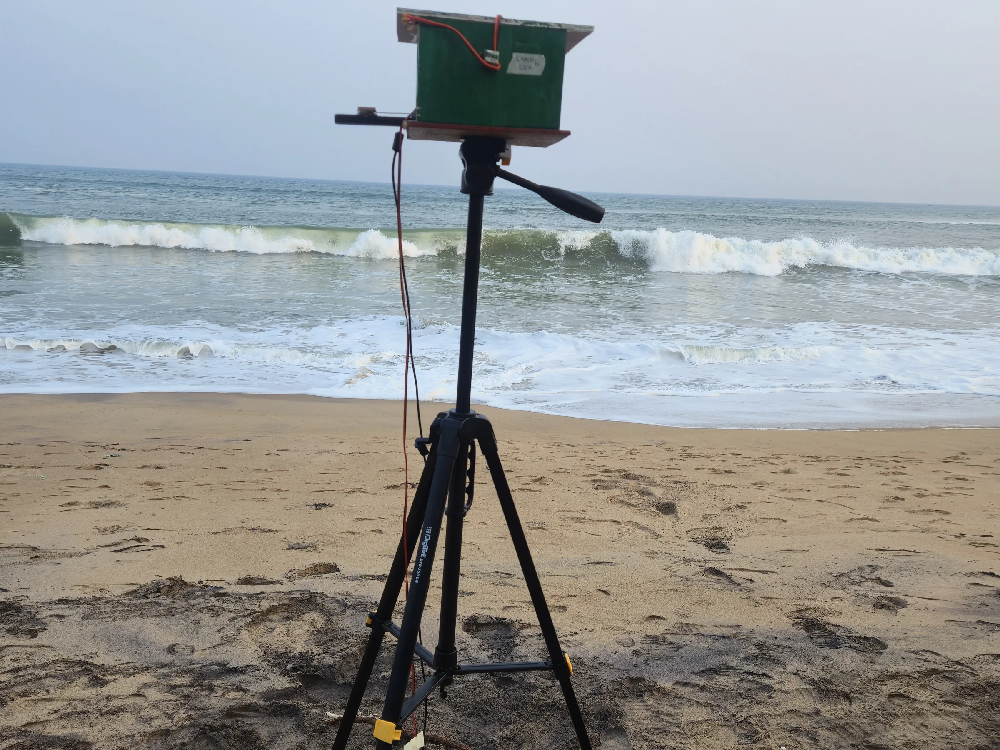

AI and sensing systems designed to operate closer to the problem.
Student researcher · Bhubaneswar
Ideas that move from curiosity to impact.
Suryakanta Lenka explores how edge AI, embedded systems and careful field research can turn ambitious questions into practical technology.
Research &
InnovationSLPortfolio · Bhubaneswar
InnovationSLPortfolio · Bhubaneswar
Profile · 01
Research guided by curiosity—engineered for the real world.
Start with the evidence. Build for the place where the idea must actually work.
A student researcher at DAV Public School Unit VIII, Suryakanta works across artificial intelligence, computer vision and embedded systems, with a focus on technologies designed around tangible environmental and social needs.
This portfolio will bring together the questions, fieldwork, experiments and iterations behind that work—not only the finished outcomes.
Experimental evidence, explainability and careful documentation.
Student researcher at DAV Public School Unit VIII, Odisha.
Selected work · 02
Three projects.
One practical instinct.
The complete case studies are being assembled. These previews trace a body of work spanning conservation, sericulture and accessible learning.

01 · Conservation technology
TurtleGuard
An explainable edge-monitoring prototype for artificial-light and thermal conditions at olive ridley rookeries.
Visit project ↗02 · Edge AI
SeriScope
A low-cost edge-AI system for fertility and disease assessment of tasar silkworm eggs.
Visit project ↗03 · Accessibility
Interactive Braille
Learning System
An embedded learning system designed to make Braille practice more interactive, accessible and affordable.
Explore ATL DAV Unit 8 ↗Portfolio · 03
The full body of work is taking shape.
Detailed case studies, experiments, recognition and the process behind each build are being carefully documented.